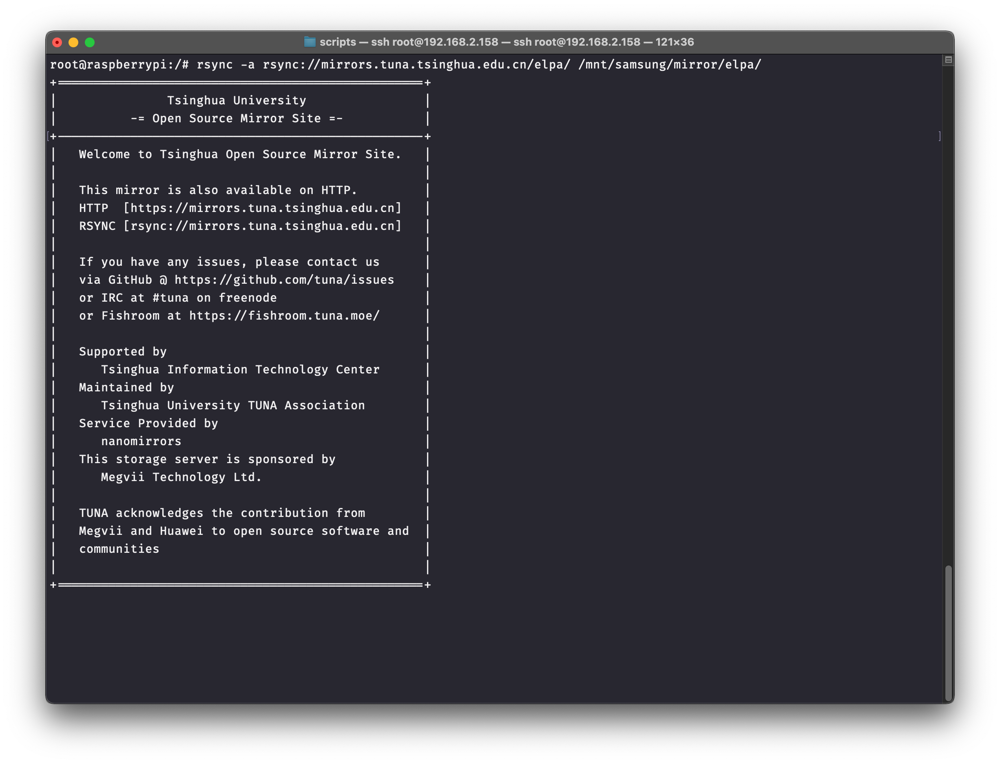
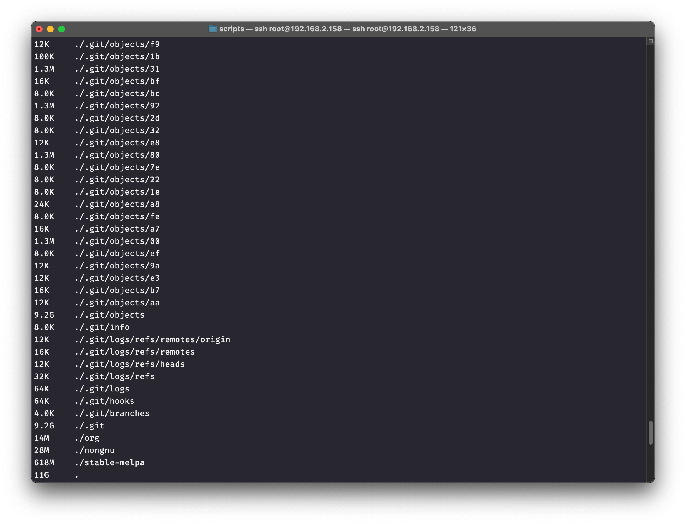
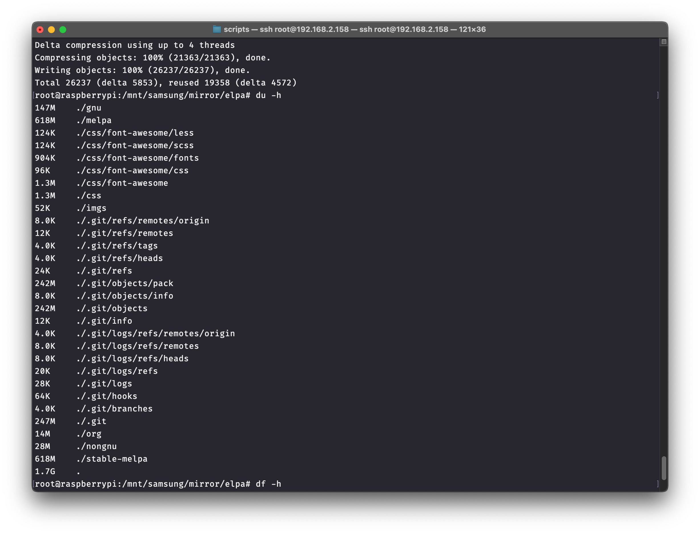
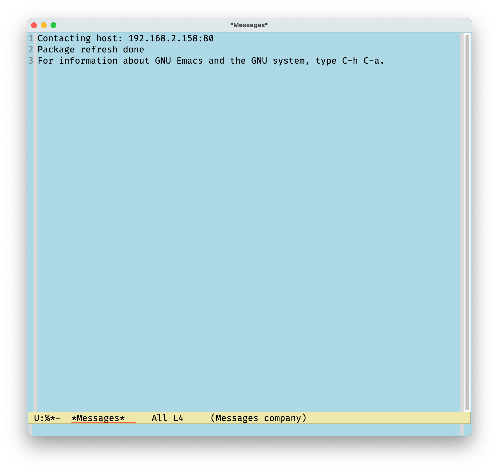

Local elpa mirror
Table of Contents
1 Local elpa mirror
Compared with pip or deb repo, elpa is really a smaller one (~ 1GB). You can sync GNU-ELPA or MELPA archives down to the local to replace the package-archives in the ~/.emacs.d/init.el
1.1 Use rsync
Rsync is a powerful command line tool to synchronize local files with files on the remote server (or local with local)
1.1.1 Install
On Debian/Ubuntu:
sudo apt-get install rsync
On Fedora/CentOS:
yum install rsync
1.1.2 Usage
There is rich functions with rsync, for this article, we only use:
rsync -a <rsync-server-addr> <mapping-directory>
| Archives | Rsync server |
|---|---|
| GNU ELPA | rsync://elpa.gnu.org/elpa/ |
| MELPA | rsync://melpa.org/packages/ |
| TUNA | rsync://mirrors.tuna.tsinghua.edu.cn/elpa/ |

The shell will be blocked and the synchronization has started, wait patiently until the sync finished. You can see in the router, rsync is downloading files from the server:
1.2 Thin
You may find the size of the mapping folder much bigger than 1GB:

This is because rsync download this .git at the same time.
You can do this to thin the folder:
cd <mapping-directory>
git gc --prune=now
after thinning:

Or, you can simply delete .git or exclude .git folder when rsyncing:
rsync -a --exclude=".git" <rsync-server-addr> <mapping-directory>
1.3 Configuration
1.3.1 use natively
If you use Emacs on the same machine as the <mapping-directory> is stored, you can setup like this:
(setq package-archives '(("gnu" . "<mapping-directory>/gnu/") ("org" . "<mapping-directory>/org/") ("melpa" . "<mapping-directory>/melpa/")))
1.3.2 use as a local http server
For example, you have more than one devices using Emacs in the LAN, configure the storing device to be a server.
Here I use Nginx to setup my Ras-Pi to be a server:
/etc/nginx/sites-enabled/elpa.conf
server { listen 80; listen [::]:80; server_name _; root /mnt/samsung/mirror/elpa; # replace with you <mapping-directory> # index.html fallback location / { try_files $uri $uri/ /index.html; } }
Check the LAN address of Ras-Pi (192.168.2.158 here), edit ~/.emacs.d/init.el of every device that will use the local mirror:
(setq package-archives '(("gnu" . "http://192.168.2.158/gnu/") ("org" . "http://192.168.2.158/org/") ("melpa" . "http://192.168.2.158/melpa/")))
1.3.3 Effect

You can write a shell that periodically rsync from server.